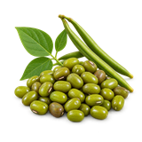

होम / मूंग

मूंग का भाव आज | Moong Mandi Price Today
मूंग का भाव आज जानना किसानों और व्यापारियों के लिए ज़रूरी है। इस पेज पर नागौर, मेड़ता, जयपुर (बस्सी) और जोधपुर जैसी उपलब्ध मंडियों में मूंग के न्यूनतम, मॉडल और अधिकतम भाव प्रति क्विंटल में देखें। गुणवत्ता, आवक और नज़दीकी मंडियों की तुलना से बेहतर फैसला लिया जा सकता है।
Check available Moong mandi prices before you sell. Compare minimum, modal and maximum rates with quality, arrivals and nearby market records.
मूंग का भाव कैसे देखें और रेट किन बातों से बदलता है
मूंग दलहन फसल है और इसका भाव दाने की रंगत, आकार, नमी तथा दाल बाजार की मांग से बदल सकता है। नई और पुरानी मूंग की गुणवत्ता भी एक जैसी नहीं होती।
आज का मूंग भाव कैसे देखें
इस पेज की मंडी-वार तालिका में न्यूनतम, मॉडल और अधिकतम भाव देखें। अपनी नज़दीकी मंडी तथा उपलब्ध दूसरी मंडियों के भाव की तुलना करके फैसला लेना अधिक उपयोगी रहता है।
- अपनी मंडी या राज्य चुनकर भाव देखें।
- न्यूनतम, मॉडल और अधिकतम भाव में अंतर समझें।
- पुराने और नए उपलब्ध रिकॉर्ड में फर्क देखकर निर्णय लें।
गुणवत्ता और ग्रेड का असर
हरेपन, दाने के आकार, सफाई, टूटे दाने और नमी के आधार पर मूंग का grade बनता है। अच्छी तरह साफ lot को अलग बोली मिल सकती है।
आवक, मांग और बाजार
मंडी में नई आवक, दाल मिलों की जरूरत और स्थानीय व्यापार मूंग के भाव को प्रभावित कर सकते हैं। अलग राज्यों की उपलब्ध मंडियों की तुलना उपयोगी रहती है।
मूंग बेचने या खरीदने से पहले ध्यान रखें
- नमी और टूटे दाने कम रखने पर ध्यान दें।
- नागौर, मेड़ता या पास की उपलब्ध मंडियों से तुलना करें।
- मूंग की किस्म या grade मिलाकर भाव न देखें।
अक्सर पूछे जाने वाले सवाल
मूंग के भाव क्या हैं?
मूंग के उपलब्ध नवीनतम भाव हर दिन मंडी की आवक और फसल की गुणवत्ता के आधार पर बदलते रहते हैं। आज के मूंग के उपलब्ध नवीनतम (न्यूनतम और अधिकतम) भाव जानने के लिए कृपया इसी पेज पर ऊपर दी गई टेबल देखें। हम किसानों और व्यापारियों की सुविधा के लिए source से रोज़ाना उपलब्ध नए रिकॉर्ड के अनुसार हमारी वेबसाइट पर मूंग और अन्य सभी प्रमुख फसलों के उपलब्ध भाव अपडेट करते हैं।
मूंग का भाव क्या है?
अगर आप आज का ताज़ा मूंग का भाव जानना चाहते हैं, तो इसकी पूरी जानकारी ऊपर लिस्ट में दी गई है। मूंग की क्वालिटी (हल्का, मीडियम या बढ़िया) और मंडियों में उसकी डिमांड के हिसाब से हर दिन कीमतों में उतार-चढ़ाव देखने को मिलता है। हमने इसी पेज पर ऊपर की तरफ जो टेबल दी है, उसमें मूंग के आज के सबसे सटीक और उपलब्ध भाव दर्ज किए गए हैं, ताकि किसानों और व्यापारियों को तुरंत सही जानकारी मिल सके। कृपया आज का मंडी रेट देखने के लिए पेज को थोड़ा ऊपर की ओर स्क्रॉल करें।
मूंग का क्या भाव चल रहा है?
नई और पुरानी मूंग की आवक के आधार पर मंडियों में इसका कारोबार चल रहा है। बढ़िया क्वालिटी (दानेदार और साफ माल) की मूंग के दाम बाजार में मजबूत बने हुए हैं, जबकि हल्की नमी वाले माल के भाव में थोड़ा अंतर देखने को मिलता है। अपनी नजदीकी मंडी के सटीक उपलब्ध भाव जानने के लिए ऊपर दी गई लिस्ट चेक करें।